Руководство пользователя¶
Студия извлечения данных Extraction Services ООО «КРИСТА» 2025
Основные понятия¶
Для кого
Настоящее руководство пользователя предназначено для операторов и аналитиков данных, работающих с платформой Extraction Services. Документ описывает порядок работы в веб-интерфейсе “Студия” (Studio), включая настройку конфигураций, создание структур данных, управление категориями документов и тестирование качества извлечения.
Студия извлечения данных (Extraction Studio) — это визуальный интерфейс для управления платформой Extraction Services. Она позволяет без написания кода настраивать правила обработки документов, тестировать их на реальных данных и анализировать результаты.
Основные возможности
- Создание и редактирование схем извлечения данных (JSON Schema)
- Настройка классификации документов
- Управление версиями конфигураций
- Пакетное тестирование на датасетах
- Отладка промптов для LLM
Термины и определения¶
| Термин | Определение |
|---|---|
| Задача (Task) | Единичный запрос на обработку документа. Каждая задача имеет свой уникальный статус (например, “В очереди”, “Обработка”, “Готово”) и результат выполнения |
| Структура данных (Data Structure) | Схема (JSON Schema), которая определяет, какие именно поля и в каком формате система должна извлечь из документа |
| Категория документа (Document Category) | Классификация типа документа (например, “Паспорт”, “Счет”, “Билет”). Категория связывает тип документа с определенной структурой данных и правилами обработки |
| Конфигурация (Configuration) | Полный набор настроек, включающий все категории и структуры данных. Конфигурации группируются по доменам и имеют версии |
| Домен (Domain) | Область применения конфигурации (например, “Бухгалтерия”, “Кадры”). Позволяет изолировать настройки для разных отделов или бизнес-процессов |
| Версия (Version) | Конкретный вариант конфигурации. Система поддерживает версионирование, что позволяет безопасно вносить изменения и возвращаться к предыдущим настройкам |
Схема процесса¶
Алгоритм работы
graph TD
Start([Начало работы]) --> CreateConfig{Создание конфигурации}
CreateConfig -->|Пустая| ConfigEmpty[Новая конфигурация<br/>с нуля]
CreateConfig -->|Клонирование| ConfigClone[Копирование<br/>существующей]
CreateConfig -->|Импорт| ConfigImport[Загрузка из ZIP]
ConfigEmpty --> CreateSchema
ConfigClone --> CreateSchema
ConfigImport --> CreateSchema
CreateSchema[Создание структуры данных<br/>Response Schema] --> DefineFields[Определение полей:<br/>- name, type<br/>- description<br/>- format]
DefineFields --> CreateCategory[Создание категории документа]
CreateCategory --> CategoryStep1[Шаг 1:<br/>- Название категории<br/>- Выбор структуры данных]
CategoryStep1 --> CategoryStep2[Шаг 2:<br/>- Область использования<br/>- Выбор сервиса<br/>- Детализация полей<br/>- Настройка промптов]
CategoryStep2 --> CreateDataset{Есть тестовые<br/>данные?}
CreateDataset -->|Нет| CreateNewDataset[Создание набора данных<br/>- Загрузка документов<br/>- Создание схемы<br/>возвращаемых значений<br/>- Заполнение эталонов]
CreateDataset -->|Да| RunTest
CreateNewDataset --> RunTest[Запуск тестирования]
RunTest --> ConfigSelect[Выбор конфигурации<br/>и наборов данных]
ConfigSelect --> TestParams[Настройка параметров:<br/>- Вне очереди<br/>- Отложенный старт<br/>- Детализация отчета]
TestParams --> ExecuteTest[Выполнение теста]
ExecuteTest --> AnalyzeResults{Анализ<br/>результатов}
AnalyzeResults -->|Точность<br/>низкая| ViewReport[Просмотр отчета:<br/>- Средняя точность<br/>- Детали по наборам<br/>- Детали по полям]
ViewReport --> EditCategory[Редактирование:<br/>- Уточнение описаний<br/>полей<br/>- Корректировка<br/>промптов]
EditCategory --> RunTest
AnalyzeResults -->|Точность<br/>приемлемая| CheckProduction{Готова для<br/>продакшена?}
CheckProduction -->|Нет| EditCategory
CheckProduction -->|Да| MarkProduction[Пометка версии<br/>как ПРОДУКТОВОЙ]
MarkProduction --> Freeze[Заморозка<br/>конфигурации]
Freeze --> NewChanges{Есть новые<br/>изменения?}
NewChanges -->|Да| CloneForChanges[Клонирование<br/>конфигурации<br/>новая версия]
CloneForChanges --> CreateSchema
NewChanges -->|Нет| End([Рабочий<br/>процесс])
style Start fill:#90EE90
style End fill:#FFB6C1
style CreateConfig fill:#87CEEB
style CreateSchema fill:#87CEEB
style CreateCategory fill:#87CEEB
style RunTest fill:#DDA0DD
style AnalyzeResults fill:#FFD700
style MarkProduction fill:#90EE90
style Freeze fill:#FFB6C1Интерфейс Студии¶
Главная страница¶
После входа в систему открывается главная страница, предоставляющая быстрый доступ к основным разделам.
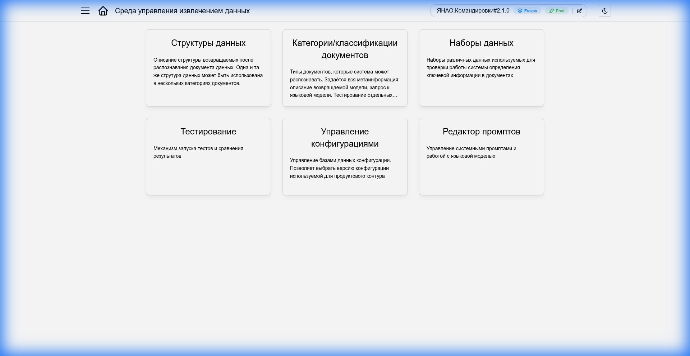
Основные разделы меню:
- Конфигурации: Управление доменами и версиями настроек
- Структуры данных: Определение полей для извлечения
- Категории документов: Настройка правил классификации и привязка схем
- Датасеты: Загрузка тестовых данных
- Тестирование: Запуск проверок и просмотр отчетов
Управление конфигурациями¶
Что такое конфигурация?
Конфигурация — это сердце вашей работы в Студии. Она объединяет все настройки системы извлечения данных: категории документов, структуры данных и промпты. Каждая конфигурация принадлежит определённому домену (например, “Командировки” или “Закупки”) и имеет версию, что позволяет безопасно экспериментировать с настройками, не ломая работающую систему.
Список конфигураций¶
Раздел Конфигурации в боковом меню открывает полный список всех доменов и их версий.
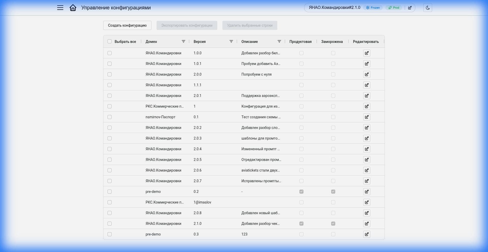
| Действие | Описание |
|---|---|
| Создать | Открывает форму создания новой конфигурации |
| Редактировать | Кнопка в строке конфигурации — открывает форму редактирования параметров |
| Экспорт | Сохраняет конфигурацию в ZIP-архив для резервного копирования или переноса на другой сервер |
| Удалить | Удаляет выбранную конфигурацию. Недоступно для продакшн-версий |
Создание новой конфигурации¶
Чтобы создать новую конфигурацию, нажмите кнопку “Создать”. Система предложит выбрать один из трёх режимов:
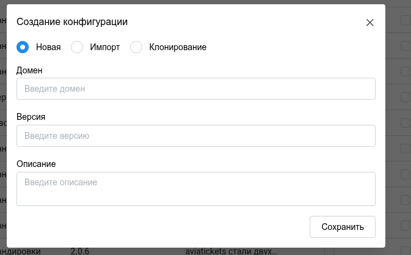
Создаёт конфигурацию “с чистого листа”. Подходит, когда вы начинаете работу над совершенно новым доменом, для которого ещё нет готовых наработок.
Что нужно указать:
- Домен — название области применения (например, “Закупки” или “HR”)
- Версия — номер версии (рекомендуется начинать с 1.0.0)
После создания вам нужно будет вручную добавить структуры данных и категории документов.
Копирует все настройки из выбранной конфигурации — категории, структуры данных, промпты. Это самый безопасный способ внести изменения в работающую систему: вы создаёте копию, экспериментируете с ней, и только после успешного тестирования переключаетесь на новую версию.
Что нужно указать:
- Домен — можно оставить тот же или указать новый
- Версия — новый номер версии (например, если клонируете 1.0.0, укажите 1.1.0 или 2.0.0)
- Базовая конфигурация — выберите конфигурацию, которую хотите скопировать
Типичный сценарий
Нужно добавить новую категорию документов или изменить схему извлечения? Склонируйте текущую продакшн-версию, внесите изменения, протестируйте — и только потом отправляйте в продакшн.
Загружает конфигурацию из ZIP-архива. Архив можно получить от коллег, скачать из другой среды (тестовой или продакшн) или восстановить из резервной копии.
Что нужно указать:
- Архив — ZIP-файл с конфигурацией (формат экспорта системы)
Домен и версия будут взяты из архива автоматически. Если такая конфигурация уже существует — импорт будет отклонён.
Когда использовать
Перенос настроек между серверами, восстановление из бэкапа, получение готовых конфигураций от команды разработки.
Редактирование конфигурации¶
Для редактирования существующей конфигурации выберите её в списке и нажмите на иконку редактирования. Откроется форма с параметрами:
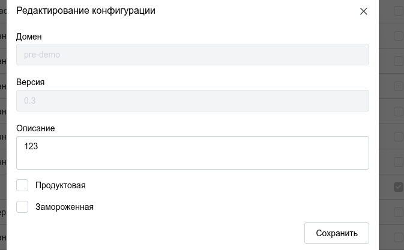
- Описание: Текстовое описание конфигурации — для чего она предназначена, какие изменения внесены по сравнению с предыдущей версией и т.д.
- Продуктовая: Отмечает версию как используемую по умолчанию. Когда внешняя система отправляет документ на обработку без указания конкретной версии — используется именно продуктовая версия.
- Заморозка: Блокирует любые изменения в конфигурации — редактирование категорий и схем становится недоступным. Используйте для защиты стабильных версий от случайных правок.
Важно
Перед тем как пометить версию как продуктовую, убедитесь, что она прошла тестирование на датасетах и показывает приемлемое качество извлечения.
Текущая конфигурация¶
Переключатель Текущая конфигурация в заголовке страницы — это глобальный контекст вашей работы в Студии. Всё, что вы видите и редактируете — категории документов, структуры данных, результаты тестов — относится именно к выбранной здесь конфигурации.
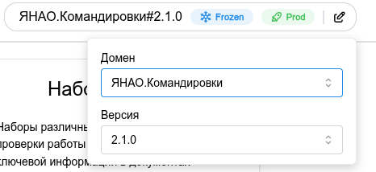
Как переключить: Кликните на переключатель — откроется список всех доступных конфигураций. Выберите нужный домен и версию.
Метки статуса: Рядом с названием конфигурации могут отображаться цветные метки, помогающие быстро понять её состояние:
- Продуктовая — версия используется по умолчанию при обработке документов через API
- Заморожена — версия защищена от редактирования
Если меток нет — это обычная рабочая версия (черновик), которую можно свободно редактировать.
Структуры данных¶
Структура данных (Response Schema) — это шаблон, определяющий какие именно поля система должна извлечь из документа. По сути, это “контракт”: вы описываете, что хотите получить, а система возвращает результат строго по этой схеме.
Каждая структура данных привязывается к одной или нескольким категориям документов. Например, структура “Билет” может использоваться для категорий “Авиабилет”, “ЖД-билет”, “Автобусный билет” — если все они извлекают одинаковый набор полей.
Список структур¶
Раздел Структуры данных в боковом меню показывает все схемы текущей конфигурации.
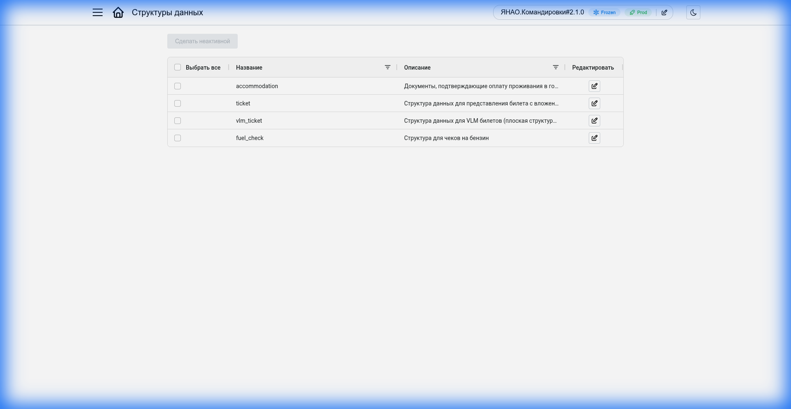
| Действие | Описание |
|---|---|
| Создать | Создаёт новую пустую структуру данных |
| Редактировать | Кнопка в строке — открывает редактор схемы. В замороженных конфигурациях кнопка доступна, но изменения сохранить нельзя |
| Удалить | Удаляет схему. Недоступно для замороженных конфигураций и схем, используемых в категориях |
Создание и редактирование структуры¶
При создании (или редактировании) структуры откроется единая форма, где нужно указать:
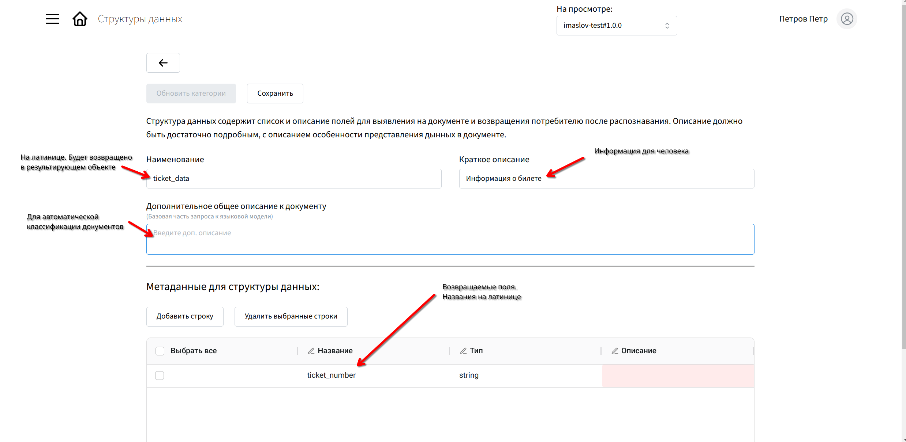
- Название — уникальный идентификатор схемы (например, train_ticket, invoice)
- Описание — для чего предназначена схема, какие документы она покрывает
- Поля — какие данные нужно извлечь из документа
Для настройки полей можно использовать визуальный редактор или вставить пример ожидаемого JSON — система автоматически сгенерирует схему на его основе.
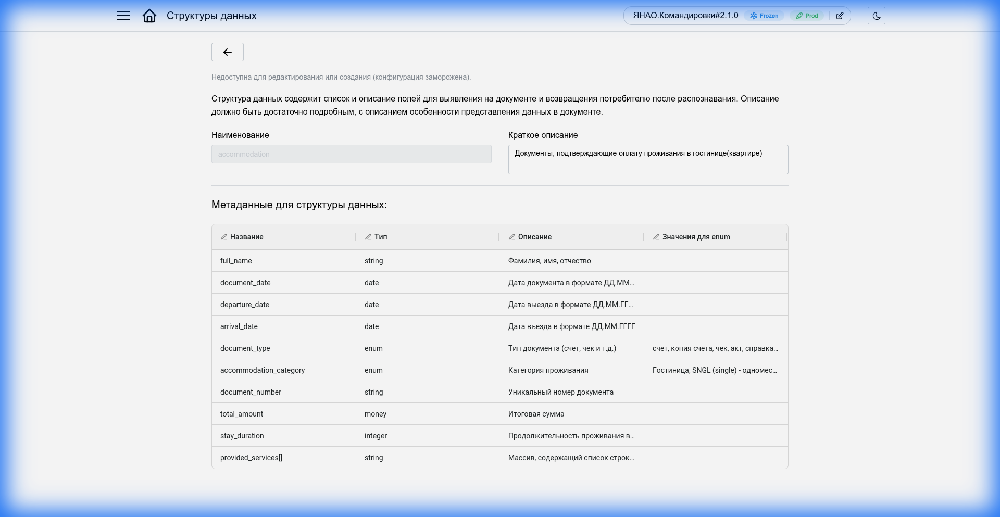
Каждое поле имеет тип. Доступные типы:
| Тип | Описание | Пример |
|---|---|---|
string |
Текстовая строка | ФИО, номер документа, название |
number |
Число (целое или дробное) | Сумма, количество |
integer |
Целое число | Порядковый номер, год |
boolean |
Логическое значение | Флаг наличия/отсутствия |
date |
Дата | Дата отправления, срок действия |
array |
Массив значений | Список пассажиров, перечень товаров |
object |
Вложенный объект | Адрес (улица, дом, город) |
Note
Описания полей можно оставить общими — детализация (например, где именно искать информацию в документе) настраивается позже, при создании категорий документов.
Категории документов¶
Категория документа — это “рецепт” обработки конкретного типа документа. Она связывает структуру данных (что извлекать) с правилами распознавания и промптами (как извлекать). Например, категория “Билет РЖД” знает, что нужно искать дату отправления, номер поезда и ФИО пассажира, и как именно это делать.
Tip
Категории — это последний шаг настройки перед тем, как система сможет обрабатывать реальные документы.
Список категорий¶
Раздел Категории документов показывает все категории текущей конфигурации.
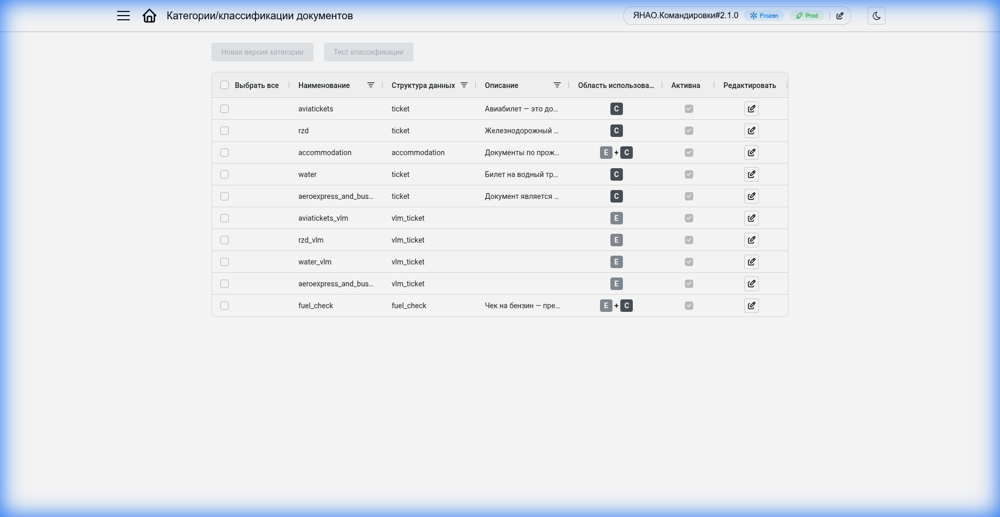
В таблице отображаются:
- Название — имя категории
- Структура данных — схема, используемая для извлечения данных
- Сервис — движок обработки (vlm-parser или ticket-parser)
- Область использования — режим работы категории:
- E+C (Extraction + Classification) — полный цикл: классификация типа документа и извлечение данных
- C (Classification) — только классификация без извлечения данных
- E (Extraction) — только извлечение данных (если тип документа уже известен)
- Активна — признак, указывающий будет ли категория использоваться системой при обработке документов. Неактивные категории игнорируются.
| Действие | Описание |
|---|---|
| Создать | Создаёт новую категорию документов |
| Редактировать | Кнопка в строке — открывает редактор категории. В замороженных конфигурациях можно открыть, но сохранить нельзя |
| Удалить | Удаляет категорию. Недоступно для замороженных конфигураций |
Создание и редактирование категории¶
При создании категории процесс состоит из двух этапов:
Шаг 1: Начальная настройка¶
Сначала нужно указать базовую информацию:
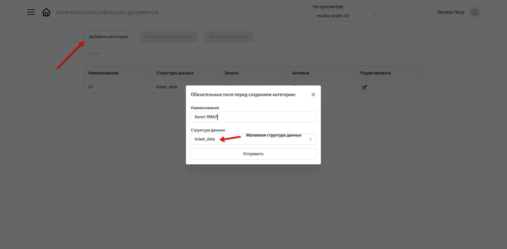
- Название — понятное имя категории (например, “Билет РЖД”, “Паспорт РФ”)
- Структура данных — выберите схему, которая будет заполняться данными из документов этой категории (после создания изменить нельзя)
Шаг 2: Детальная настройка¶
После создания (или при редактировании существующей категории) откроется полная форма:
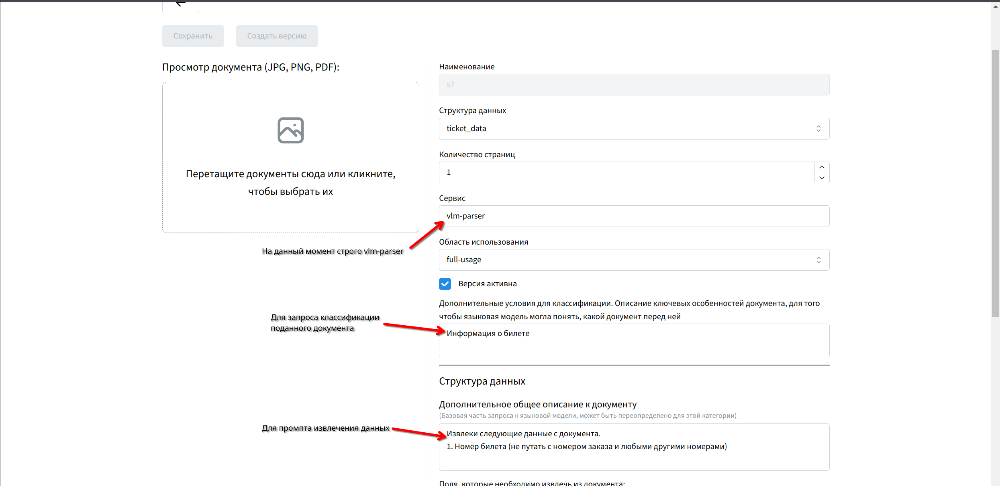
Основные параметры:
- Версия активна — включает/выключает использование категории при обработке документов
- Наименование — имя категории
- Структура данных — выбранная схема (только для просмотра)
- Количество страниц — ожидаемое количество страниц в документах этой категории
- Область использования — режим работы категории:
- Классификация + извлечение — полный цикл обработки
- Только классификация — определение типа без извлечения (извлечение будет выполнено другим способом)
- Только извлечение — явный вызов VLM для извлечения данных из документа известного типа
- Сервис — движок обработки (vlm-parser или ticket-parser). Для режимов “Классификация + извлечение” и “Только извлечение” автоматически устанавливается vlm-parser.
- Дополнительные условия для классификации — описание ключевых особенностей документа, помогающее языковой модели понять, какой документ перед ней (показывается не для всех режимов)
Настройка полей структуры данных:
Таблица с полями из выбранной схемы. Для каждого поля можно указать:
- Описание — детализация того, что именно нужно извлечь и где это искать в документе
- Значение по умолчанию — значение, которое будет использовано, если поле не найдено в документе
Промпт для извлечения:
Запрос к языковой модели для извлечения информации. Генерируется автоматически на основе таблицы полей, но может быть вручную отредактирован для уточнения инструкций.
Пример детализации
Если в структуре данных вы указали просто “дата”, то в описании поля категории можно уточнить: “Дата отправления поезда в формате ДД.ММ.ГГГГ, расположена в верхней части билета справа от логотипа РЖД”.
Чем точнее описания и промпты — тем качественнее и стабильнее работает извлечение данных.
Наборы данных¶
Для контроля качества работы системы предусмотрен функционал работы с тестовыми данными. Раздел Наборы данных состоит из двух вкладок.
Список наборов данных¶
Набор данных — это коллекция тестовых документов с эталонными результатами извлечения. Используется для проверки качества работы конфигураций.
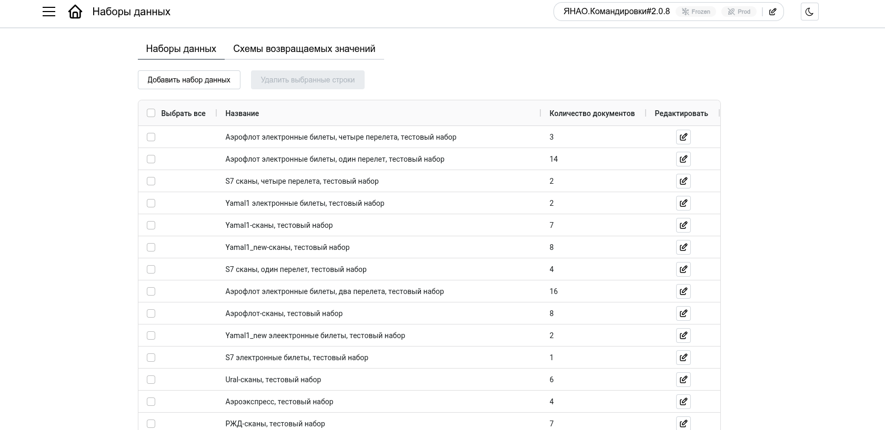
В таблице отображаются:
- Название — имя набора данных
- Описание — назначение набора (опционально)
- Количество документов — число документов в наборе
| Действие | Описание |
|---|---|
| Создать | Создать новый набор данных |
| Редактировать | Открыть набор для управления документами |
| Удалить | Удалить набор данных |
Создание набора данных¶
При создании нужно указать:
- Название набора данных — уникальное имя
- Описание набора данных — для чего предназначен набор (опционально)
Работа с документами в наборе¶
После создания (или при редактировании) открывается страница управления документами набора:
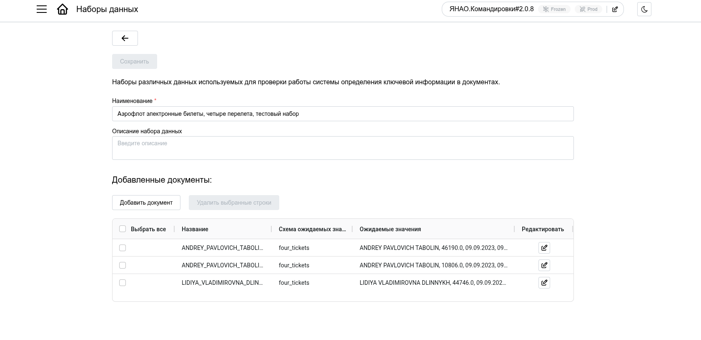
Здесь отображается список документов с их характеристиками:
- Название — имя файла документа
- Схема ожидаемых значений — какая схема используется для хранения эталонных данных
- Ожидаемые значения — эталонные данные для сравнения
Действия с документами:
- Добавить документ — загрузить новый тестовый документ
- Редактировать — изменить эталонные данные или категории документа
- Удалить — удалить документ из набора
Добавление документа в набор¶
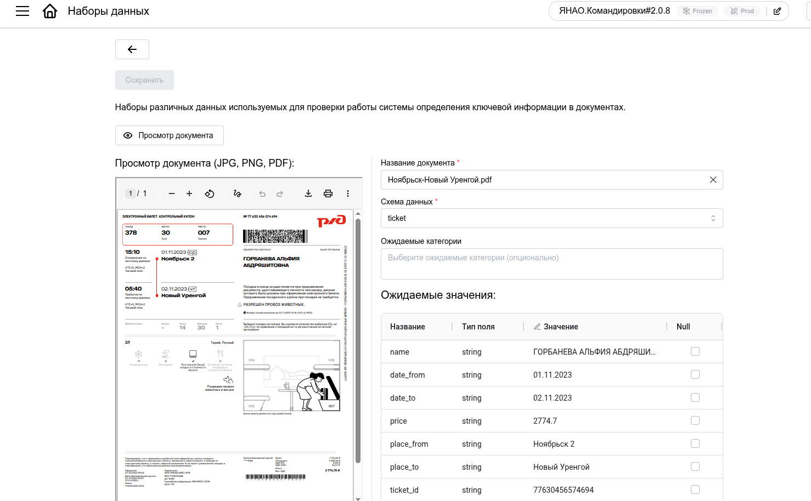
При добавлении документа нужно:
- Прикрепить файл — загрузить изображение или PDF
- Указать название — имя документа в наборе
- Выбрать схему ожидаемых значений — схему для хранения эталонных данных
- Заполнить ожидаемые значения — эталонные данные, с которыми будет сравниваться результат обработки
- Выбрать ожидаемые категории (опционально) — указать, какие категории должны быть обнаружены на каждой странице документа. Используется для тестирования режима без автоматической классификации, когда категории передаются явно.
Схемы возвращаемых значений¶
Схема возвращаемых значений (Field Schema) — это шаблон для хранения эталонных данных в тестовых документах. В отличие от структур данных (Response Schema), которые используются в продакшене, схемы возвращаемых значений создаются специально для тестирования.
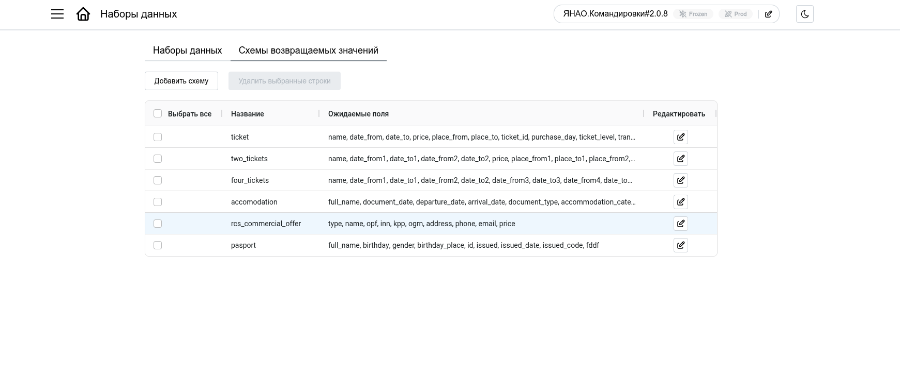
В таблице отображаются:
- Название — имя схемы
- Ожидаемые поля — список полей в схеме
| Действие | Описание |
|---|---|
| Создать | Создать новую схему |
| Редактировать | Изменить поля схемы |
| Удалить | Удалить схему (если она не используется в документах) |
Создание схемы возвращаемых значений¶
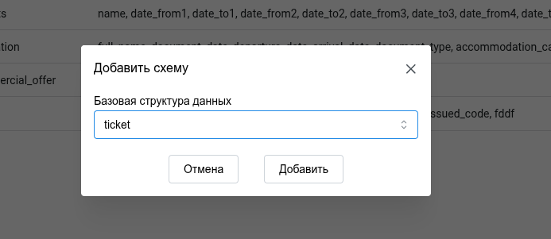
При создании можно:
- Создать пустую схему — указать название и вручную добавить поля
- Создать из существующей структуры данных — импортировать поля из Response Schema, созданной ранее в разделе “Структуры данных”
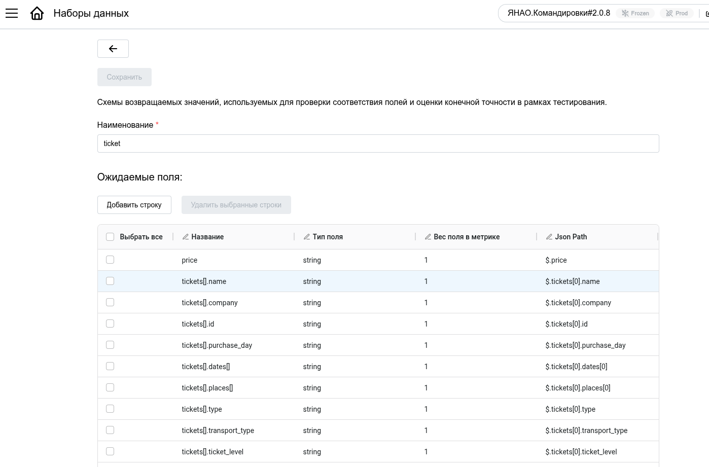
После выбора способа создания откроется редактор полей, где для каждого поля указывается:
- Название — имя поля
- Тип поля — string, number, date, array, object и т.д.
- Вес поля в метрике — число от 0 до 1, определяющее важность поля при расчете точности тестирования. Поля с большим весом сильнее влияют на итоговую оценку качества.
- Json Path — путь к полю в JSON-ответе (например,
$.nameдля простого поля или$.passenger.firstNameдля вложенного). Используется для корректного извлечения значений из результатов обработки.
Тестирование¶
Раздел тестирования позволяет проверить качество работы конфигурации на наборах данных с эталонными результатами. Система запускает обработку документов, сравнивает полученные результаты с ожидаемыми и формирует подробный отчет.
Список задач тестирования¶
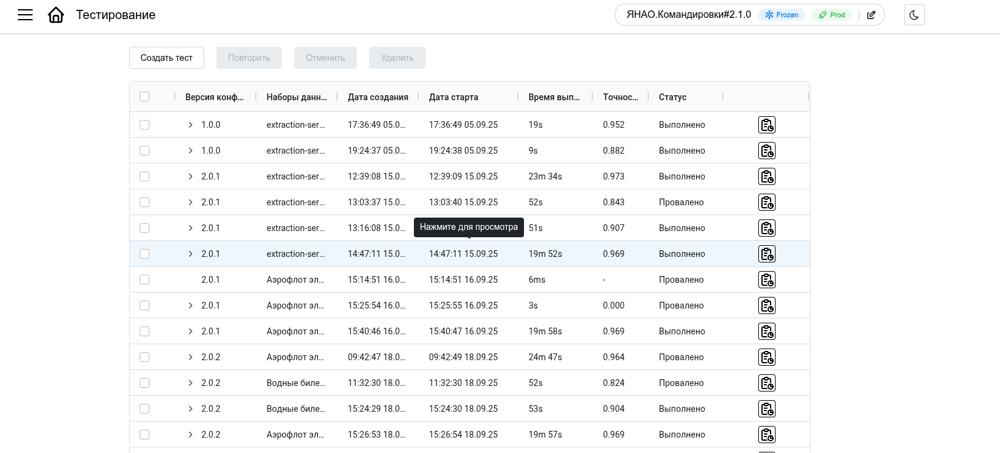
Главная страница показывает все задачи тестирования (выполненные, запущенные, запланированные).
В таблице отображаются:
- Версия конфигурации — какая конфигурация тестируется (кликабельно, открывает детальный отчет)
- Наборы данных — список наборов, на которых проводится тестирование
- Дата создания — когда задача была создана
- Точность — средняя взвешенная точность (показывается только для завершенных задач)
- Статус — текущее состояние задачи:
- Запланировано — задача в очереди, ожидает выполнения
- В работе — задача выполняется
- Успешно — тестирование завершено успешно
- Провалено — тестирование завершено с ошибками
- Отменено — задача была отменена
- Иконка статуса — визуальный индикатор результата (✓ успешно, ✗ провалено)
| Действие | Описание |
|---|---|
| Запустить тестирование | Создать новую задачу |
| Повторить | Создать копию выбранных задач и запустить заново |
| Отменить | Остановить выполнение запущенных задач |
| Возобновить | Запустить отмененные или проваленные задачи повторно |
| Удалить | Удалить выбранные задачи |
Создание задачи тестирования¶
При нажатии “Запустить тестирование” откроется форма:
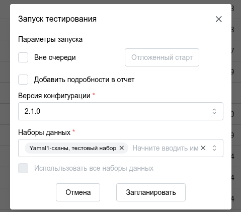
Параметры запуска:
- Вне очереди — запустить задачу с наивысшим приоритетом, минуя очередь (не совместимо с отложенным стартом)
- Отложенный старт — указать дату и время, когда задача должна начаться (не совместимо с режимом “вне очереди”)
- Добавить подробности в отчет — включить в отчет успешные совпадения полей (по умолчанию показываются только ошибки)
Версия конфигурации:
- Выбрать конфигурацию для тестирования (по умолчанию — текущая активная)
Наборы данных:
- Выбрать наборы данных для тестирования
- Использовать все наборы данных — запустить тестирование на всех доступных наборах
После заполнения нажмите “Запланировать” — задача будет создана и запущена согласно параметрам.
Просмотр результатов¶
Для просмотра подробного отчета кликните на Версию конфигурации в таблице задач.
Вкладка “Результаты”¶
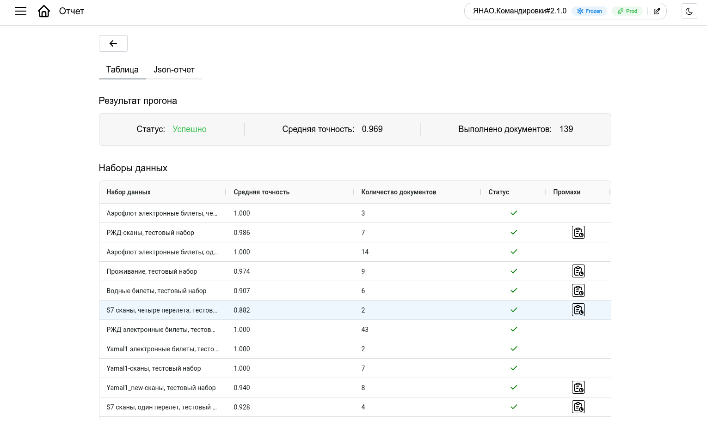
Отчет содержит три секции:
1. Результат прогона:
- Статус — успешно (зелёный) или провалено (красный)
- Средняя точность — взвешенная точность по всем наборам данных
- Выполнено экспериментов — общее количество обработанных документов
2. Наборы данных:
Таблица с результатами по каждому набору:
- Набор данных — название набора
- Средняя точность — точность по данному набору
- Количество экспериментов — число документов в наборе
- Иконка статуса — результат (✓/✗)
- Детали — кнопка для просмотра детальной информации по документам набора
Детали по набору данных¶
При клике на иконку деталей откроется модальное окно со списком документов:
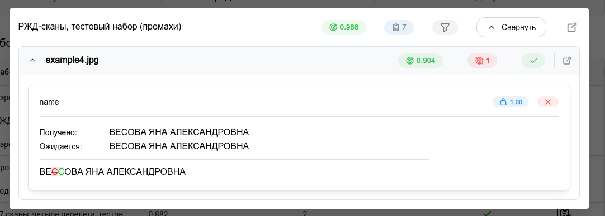
Для каждого документа показывается:
- Название документа — имя файла (кликабельно, открывает детали по полям)
- Взвешенная точность — точность извлечения по данному документу
- Количество промахов — сколько полей было извлечено неверно
- Ошибка выполнения — если документ не был обработан (технические ошибки)
- Иконка статуса — результат обработки документа
Note
При клике на название документа откроется детальное сравнение полей:
- Название поля — имя извлекаемого поля
- Ожидаемое значение — эталонное значение из набора данных
- Полученное значение — что извлекла система
- Вес — вес поля в метрике точности
- Иконка статуса — совпадение (✓) или несовпадение (✗)
Вкладка “JSON”¶
Показывает полный отчет в формате JSON для технического анализа или интеграции с внешними системами.
Важно
Точность рассчитывается на основе взвешенной метрики — поля с большим весом (указанным в схеме возвращаемых значений) влияют сильнее на итоговую оценку качества.
Редактор промптов¶
Инструмент для тонкой настройки системных промптов, отправляемых в LLM. Позволяет экспериментировать с формулировками инструкций для улучшения качества извлечения в сложных случаях.
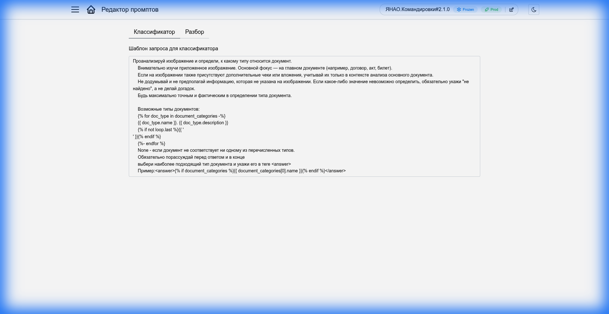
Дополнительные инструменты¶
В интерфейсе также доступны ссылки на технические инструменты (обычно используются администраторами или разработчиками):
- Swagger UI: Документация API
- Mongo Express: Прямой доступ к базе данных
Tip
Эти инструменты помогают в глубокой диагностике и интеграции с внешними системами.